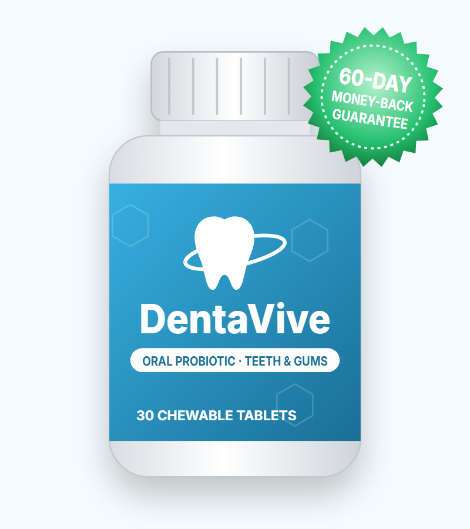
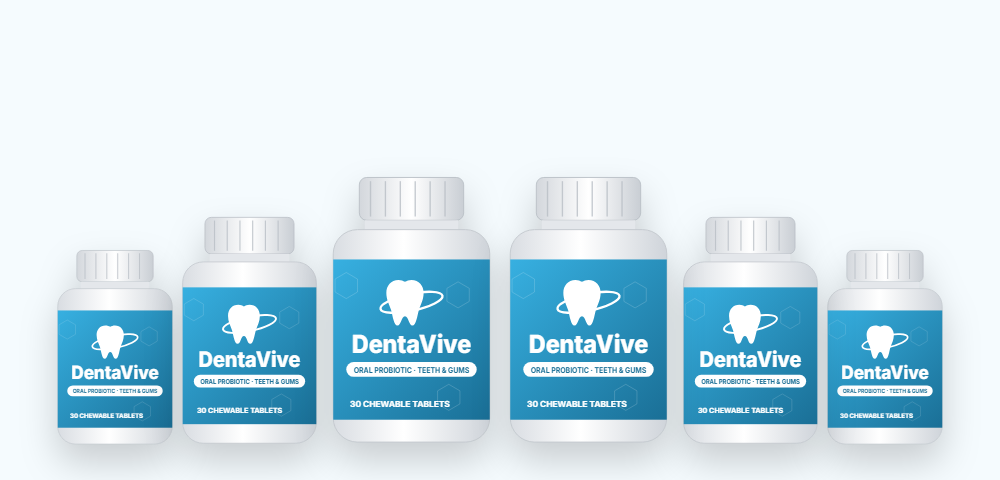

Competing With Harmful Bacteria
Beneficial strains take up space and nutrients on teeth and gums, leaving less room for plaque and odor bacteria.*
What's inside the DentaVive chewable, what the research on oral probiotics actually shows, and where to buy safely

DentaVive is a chewable oral probiotic sold to support healthier gums, fresher breath and stronger teeth. In this DentaVive review we look at the five probiotic strains the vendor lists, what dental research says about each one, how to take it, who should be careful, and the current price — plus the claims on the sales page that go too far.
DentaVive is an oral probiotic — a supplement containing "friendly" bacteria meant to live in your mouth rather than your gut. It comes as chewable tablets, 30 to a bottle, and is sold as a one-tablet-a-day product.
The idea behind oral probiotics is simple. Your mouth hosts hundreds of bacterial species. When harmful ones dominate, they contribute to plaque, gum inflammation (gingivitis) and bad breath. Adding beneficial strains may help crowd out the troublemakers and calm inflammation.
The vendor lists five strains: Lactobacillus reuteri, Lactobacillus paracasei, Bifidobacterium lactis BL-04, Lactobacillus salivarius and Streptococcus salivarius K12, plus tricalcium phosphate (a calcium-phosphate mineral) and inulin (a prebiotic fiber).
The sales page goes much further, claiming DentaVive "reverses gum disease," "strengthens loose teeth" and "prevents root canals, crowns and implants." Those claims aren't supported by research, as we explain below. DentaVive is a supplement — it can support oral health alongside brushing, flossing and dental visits, but it can't replace them.
Oral probiotics like DentaVive are thought to work in three ways.*
Beneficial strains take up space and nutrients on teeth and gums, leaving less room for plaque and odor bacteria.*
S. salivarius K12 makes bacteriocins that target odor-causing species, and L. reuteri produces reuterin.*
Some lactobacilli lower inflammatory signals in gum tissue, which may reduce bleeding when brushing.*
A chewable format matters here: the bacteria need contact time with teeth and gums, which is why studies usually use lozenges or chewables rather than capsules you swallow.
Probiotic bacteria generally don't settle permanently in the mouth. Benefits in studies tend to fade a few weeks after people stop taking them, so oral probiotics work best as an ongoing habit.
These are the strains and ingredients the vendor lists for DentaVive. The sales page doesn't publish a full supplement facts panel, so check the label on your bottle for amounts.
The most-studied oral probiotic for gums. Several randomized trials found less bleeding and plaque when L. reuteri lozenges were used alongside normal care, and some studies support it as an add-on to deep cleaning for periodontitis.*
A strain originally found in the mouths of healthy people. Small studies show reduced bad-breath compounds, and it's also studied for throat health.*
Some lab and small clinical studies suggest it can reduce levels of Streptococcus mutans, the main cavity-causing bacterium.*
Studied in tablets for plaque and gum inflammation, with modest results in small trials.*
BL-04 is mostly researched for immune and digestive health. We found little dental research on this specific strain, and probiotics don't rebuild enamel.*
Calcium phosphate supplies minerals found in enamel; fluoride toothpaste has much stronger evidence for remineralization. Inulin is a prebiotic fiber.*
The nicknames in quotes are the vendor's. CFU count, sweeteners and flavorings are not listed on the sales page — always read your bottle's label.
| Goal | Best-studied strain | What studies show | Strength |
|---|---|---|---|
| Bleeding gums (gingivitis) | L. reuteri | Less bleeding and plaque vs. placebo over 2–12 weeks | Moderate |
| Periodontitis | L. reuteri | Small extra benefit when added to professional deep cleaning | Moderate (add-on only) |
| Bad breath | S. salivarius K12 | Lower odor compounds in short studies | Limited–moderate |
| Cavities | L. paracasei, L. reuteri | Reduced cavity bacteria counts; effect on actual cavities unclear | Limited |
| Loose teeth / bone loss | — | No evidence probiotics tighten teeth or regrow bone | None |
The vendor's own reference list includes a randomized trial showing L. reuteri reduces gingivitis and reviews on probiotics in periodontal therapy and bad breath. Those references support oral probiotics as a helpful add-on to dental care. None of them test the DentaVive product, and none show reversal of established gum disease.
Results also depend on dose and strain amount, which the sales page doesn't disclose.
Our take: DentaVive's strain list is well chosen — L. reuteri and S. salivarius K12 are the two oral probiotics with the most research. It may help with mild gum bleeding and breath when used with good brushing and flossing. It won't fix gum disease, cavities or loose teeth on its own.
To understand what an oral probiotic can and can't do, it helps to know how the mouth's bacteria behave.
Within hours of brushing, bacteria begin forming a sticky film called plaque on teeth and along the gumline. Early colonizers are mostly harmless. If plaque isn't removed, it matures and shifts toward species that thrive without oxygen and produce acids and inflammatory toxins.
Gingivitis is the early, reversible stage: red, puffy gums that bleed when you brush. Good brushing, flossing and a professional cleaning can resolve it completely. If it continues, it can progress to periodontitis, where inflammation destroys the fibers and bone holding teeth in place. That damage is permanent and is the main reason adults lose teeth.
Cavities are driven by bacteria such as Streptococcus mutans that turn sugar into acid and dissolve enamel. Bad breath usually comes from bacteria on the back of the tongue that release sulfur compounds. Each of these problems involves different bacteria, which is why oral probiotics use several strains.
Probiotic strains don't remove plaque or tartar — only brushing, flossing and cleanings do that. What they may do is nudge the balance of bacteria toward healthier species and calm gum inflammation, which is why they show the most benefit for gingivitis and bad breath rather than for advanced disease.
The sales page says healthy gums support heart and immune health. There's real science behind the link, though it's often overstated.
The practical takeaway is the same: healthy gums are worth protecting, and the most effective tools are daily cleaning and professional care, with an oral probiotic as an optional extra.
Realistically, these are the benefits an oral probiotic like DentaVive may support.*
L. reuteri may reduce bleeding and tenderness when brushing.*
S. salivarius K12 targets odor-producing bacteria on the tongue.*
Friendly strains help keep harmful bacteria in check.*
Some lactobacilli reduce plaque scores in short studies.*
Tricalcium phosphate supplies calcium and phosphate found in enamel.*
One chewable a day, no water or capsules to swallow.*
DentaVive is sold as 30 chewable tablets per bottle, a one-month supply. For the best contact with teeth and gums:
Use the 60-day guarantee window to judge it: note whether your gums bleed when you brush and floss now, then compare at week seven.
Oral probiotics have a good safety record in healthy adults. Things to know:
Gums that bleed easily, swell or recede can be a sign of periodontitis, which is linked to heart disease and diabetes. Get it checked rather than relying on a supplement.
DentaVive combines a sensible set of oral probiotic strains in a chewable form, and it may help with mild gum bleeding and bad breath when used with good brushing, flossing and regular cleanings. The sales page, however, promises things no probiotic can deliver. If you'd like to try it, check the label for the CFU count, order from the official website for the 60-day guarantee, and keep seeing your dentist.
Visit the DentaVive Official Website| Option | What it does | Typical cost | Evidence |
|---|---|---|---|
| DentaVive | 5-strain chewable oral probiotic | $49–$79 per month | Strains studied; product not tested |
| Single-strain L. reuteri lozenges | Gum-focused probiotic used in trials | $15–$30 per month | Moderate for gingivitis |
| Fluoride toothpaste + floss | Removes plaque, strengthens enamel | A few dollars a month | Strong |
| Professional cleaning | Removes tartar, treats gum pockets | Varies; often covered | Strong, essential for periodontitis |
Use fluoride toothpaste and a soft brush angled toward the gumline.
Floss or interdental brushes reach the areas where gum disease usually starts.
Most bad-breath bacteria live on the back of the tongue; a scraper helps.
Sugar feeds cavity bacteria — the same lesson ancient teeth teach.
Smoking is one of the strongest risk factors for gum disease and tooth loss.
Saliva protects teeth; dry mouth increases decay and bad breath.
A dentist or hygienist can measure gum pockets, remove tartar and treat infection — things no supplement can do. Ask them whether an oral probiotic such as DentaVive makes sense as part of your home care.
Several sites with near-identical names — dentaviive.com, denetavive.com, dentaavive.com, web-dentavive.com — present themselves as the official DentaVive store. To buy the genuine product:
For the guarantee and bonuses, order from the DentaVive official website.
Each DentaVive bottle is a 30-day supply. These are the packages on the official order page we link to.
60-Day Supply
$79/bottle
+ 3 free bonuses
180-Day Supply
$49/bottle
List $414 · Save $120
120-Day Supply
$69/bottle
List $316 · Save $40
Prices checked on the official order page on October 18, 2026 and may change. The vendor's main page has shown different bundles (for example 3 bottles at $59); always confirm the total on the checkout page.
Every package on the DentaVive order page we link to is shown with three free bonuses. They are digital guides delivered after purchase. Other sites describe them as covering daily oral-health habits, what to do in a dental emergency, and the link between oral and overall health, with a combined value of about $162. The vendor's order page doesn't name the guides, so check the details on the checkout page.
Treat the guides as general reading. For anything urgent — a knocked-out tooth, facial swelling or severe pain — contact a dentist or emergency service right away.
A common question is whether you need to change your toothpaste or mouthwash to use an oral probiotic. You don't need to stop either, but timing helps:

DentaVive orders from the official website come with a 60-day money-back guarantee.
The vendor says to use it daily as directed, give it the full 60 days, and if you're not happy for any reason, contact them for a full refund — and that you can even send back empty bottles.
Contact support well before day 60 and keep your shipping receipt for any returned bottles.
Try DentaVive Risk-FreeDentaVive is a chewable oral probiotic supplement for teeth and gums. Each bottle holds 30 chewable tablets, and the vendor lists five probiotic strains — Lactobacillus reuteri, Lactobacillus paracasei, Bifidobacterium lactis BL-04, Lactobacillus salivarius and Streptococcus salivarius K12 — plus tricalcium phosphate and inulin.
Some of the DentaVive strains, especially L. reuteri and S. salivarius K12, have clinical studies showing modest improvements in gum bleeding and bad breath when used alongside normal brushing. But there is no published trial on DentaVive itself, and no probiotic has been shown to reverse gum disease, rebuild bone or tighten loose teeth.
DentaVive comes as chewable tablets, 30 per bottle, and each bottle is sold as a 30-day supply, so one tablet a day. Chew it slowly and let it dissolve in your mouth, ideally after brushing at night. Follow the directions on your bottle.
On the official order page DentaVive costs $79 per bottle for 2 bottles ($158), $69 per bottle for 4 bottles ($276 with free shipping) and $49 per bottle for 6 bottles ($294 with free shipping). Each package shows three free bonuses. Prices on other DentaVive pages can differ.
No. Bleeding gums, loose teeth and persistent bad breath can be signs of periodontitis, which needs professional cleaning and treatment. An oral probiotic may support gum health alongside dental care, but it cannot prevent the need for treatment once disease is present.
Oral probiotics are generally well tolerated. Inulin may cause mild gas or bloating. People with a weakened immune system, artificial heart valves or a history of endocarditis should talk to a doctor before taking any probiotic.
The vendor's sales page does not state the number of colony-forming units. Some third-party websites mention 3.5 billion CFU, but we could not confirm that from the vendor, so check the supplement facts on your bottle.
The vendor describes DentaVive as vegan-friendly and plant-based, and the bottle carries a vegetarian mark.
The order page shows one-time package prices for 2, 4 or 6 bottles. Check your order summary before paying to make sure no auto-ship option is selected.
DentaVive comes with a 60-day money-back guarantee. The vendor says you can return even empty bottles within 60 days for a full refund.
Dentavive V2 is the name used for the current DentaVive offer. Some look-alike sites spell it Dentaviive or Denetavive. They refer to the same oral probiotic chewable.
DentaVive is sold through the vendor's own order page, which offers the package prices, bonuses and the 60-day guarantee. Look-alike sites and marketplace listings may not include the guarantee.
Get DentaVive for as little as $49 per bottle with free shipping on the 6-bottle package — with three free bonuses and a 60-day money-back guarantee.
Order DentaVive Now